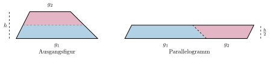
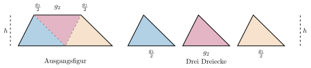
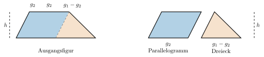
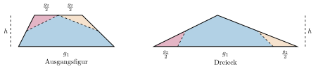

Aufgabe 6.4
In der Aufgabe aus dem Mathbuch soll mit Hilfe der Teilflächen eine Flächenformel für das Trapez entwickelt werden die markierten Punkte sind Seitenmittelpunkte.
Lösen Sie die oben gestellte Aufgabe selbst. Welche didaktischen Prinzipien werden hier insbesondere angesprochen?
- Wie kann man ein Trapez in bekannte Figuren zerlegen?
- Welche Hilfskonstruktionen sind sinnvoll?
- Wie nutzt man die Symmetrie des Trapezes?
- Können Sie die algebraischen Umformungen geometrisch deuten?
Vier verschiedene Herleitungen der Trapezformel:
Variante 1: Zerlegungsprinzip
Das Trapez wird auf halber Höhe in zwei Trapeze zerlegt. Das obere wird so umgelegt, dass ein Parallelogramm mit der Grundseite $g_1+g_2$ und der Höhe $h$ entsteht.
\[(g_1+g_2) \cdot \frac{h}{2}\]

Variante 2: Additionsprinzip
Das Trapez wird in drei Dreiecke zerlegt, indem man den Mittelpunkt der Strecke $g_1$ mit den oberen beiden Ecken verbindet. Dadurch entstehen zwei Dreiecke mit Grundseite $\frac{g_1}{2}$ und eines mit Grundseite $g_2$. Alle haben die gleiche Höhe wie das Trapez.
\[2 \cdot \frac{1}{2} \cdot \frac{g_1}{2} \cdot h + \frac{1}{2} \cdot g_2 \cdot h\]

Variante 3: Additionsprinzip
Das Trapez wird in ein Parallelogramm und ein Dreieck zerlegt in dem man durch die obere rechte Ecke eine Strecke parallel zur linken Seite zieht. Das so entstandene Parallelogramm hat die Grundseite $g_2$ und das Dreieck hat die Grundseite $g_1-g_2$. Beide Figuren haben die Höhe $h$.
\[ \frac{(g_1-g_2)}{2} \cdot h + g_2 \cdot h \]

Variante 4: Seitenmittelpunkte
Das Trapez wird in ein Fünfeck und zwei Dreiecke zerlegt, indem man jeweils Schneidekanten zwischen den Mittelpunkten der Seiten links, rechts und oben zeichnet. Die entstandenen Dreiecke werden so umgelegt, dass ein grosses Dreieck entsteht mit Höhe $h$ und Grundseite $g_1+g_2$.
\[\frac{(g_1+g_2)\cdot h}{2} \]

Gleichwertigkeit der Formeln:
Wir zeigen algebraisch, dass alle vier Varianten zur gleichen Trapezformel führen:
Alle vier Herleitungen führen zur klassischen Trapezformel: \[A = \frac{(g_1+g_2) \cdot h}{2} = (g_1+g_2)\cdot \frac{h}{2} =\frac{g_1+g_2}{2} \cdot h\]
Im Video: Etappe 6 · Das Ergänzungsprinzip bei 3:46